- Rio de Janeiro, RJ
- Rio de Janeiro (informalmente referido como Rio) é um município brasileiro, capital do estado homônimo, situado no Sudeste do país. Maior destino turístico internacional no Brasil, da América Latina e de todo o Hemisfério Sul (em 2008), a capital fluminense é a cidade brasileira mais conhecida no exterior.
-
Saiba mais
Não faltam novos lugares no mundo para descobrir! Uma cidade que oferece grande diversidade, paisagens deslumbrantes e a mais diversa natureza. Alguns destinos se destacam pela estrutura bem edificada, outros pelo grande número de atrações, e com tantas opções, sempre haverá um novo destino para descobrir e amar. Entre tantos lugares para viajar, é difícil escolher o melhor, por isso selecionamos para você os melhores destinos em todos os continentes.
Escolha seu proximo destino agora!
Se encante pelos 10 países mais visitados do mundo
Destinos mais procurados do Brasil

- 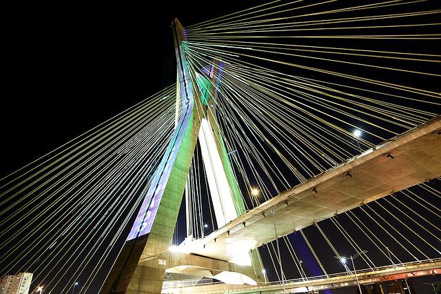
- São Paulo, SP
- São Paulo é a capital do estado homônimo e principal centro financeiro, corporativo e mercantil da América do Sul. É a cidade mais populosa do Brasil, do continente americano e de todo o hemisfério sul. São Paulo é a cidade brasileira mais influente no cenário global, sendo, em 2016, a 11.ª cidade mais globalizada do planeta
Saiba mais
- 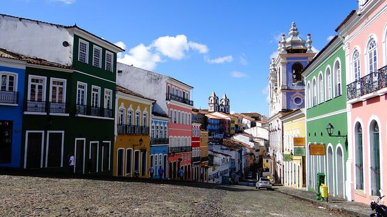
- Salvador, BA
- Salvador é a capital do estado da Bahia. Salvador é notável em todo o país pela sua gastronomia, música e arquitetura, reconhecidas também internacionalmente. A influência africana em muitos aspectos culturais da cidade a torna o centro da cultura afro-brasileira.Primeira capital da América Portuguesa, a cidade é uma das mais antigas do continente americano e uma das primeiras cidades planejadas no mundo, ainda no período do Renascimento.
Saiba mais
- 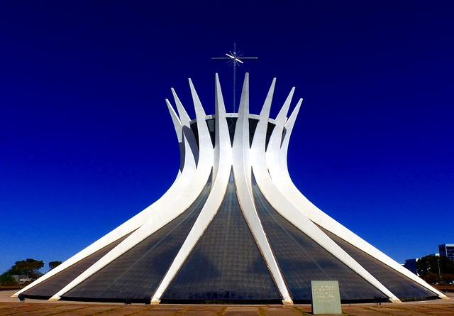
- Brasília, DF
- Brasília é a capital federal do Brasil e a sede de governo do Distrito Federal. A capital brasileira é a maior cidade do mundo construída no século XX. Como capital nacional, Brasília abriga a sede dos três poderes da República (Executivo, Legislativo e Judiciário) e 127 embaixadas estrangeiras. A cidade é considerada um Patrimônio Mundial pela UNESCO, devido ao seu conjunto arquitetônico e urbanístico
Saiba mais
Destinos mais belos da Europa

- Paris, França
- Paris é a capital e a mais populosa cidade da França. Desde o século XVII, Paris é um dos principais centros de finanças, diplomacia, comércio, moda, ciência e artes da Europa. De acordo com a Pesquisa de Custo de Vida da Economist Intelligence Unit em 2018, Paris era a segunda cidade mais cara do mundo, atrás apenas da Singapura e à frente de Zurique, Hong Kong, Oslo e Genebra. Abrangendo numerosos monumentos e por conta de seu considerável papel político e econômico, Paris é também uma importante cidade na história do mundo. Sua posição numa encruzilhada entre os itinerários comerciais terrestres e fluviais no coração de uma rica região agrícola a tornou uma das principais cidades francesas ao longo do século X, beneficiada com palácios reais, ricas abadias e uma catedral.
Saiba mais
- 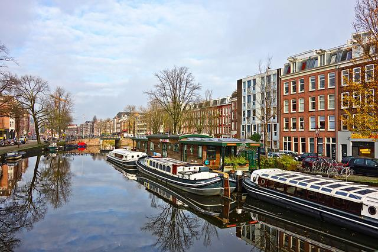
- Amsterdã, Holanda
- Amesterdã é a capital e a cidade mais populosa do Reino dos Países Baixos. O seu estatuto de capital holandesa é garantido pela Constituição dos Países Baixos, embora não seja a sede do governo holandês, que fica em Haia. O nome da cidade deriva Amstelredamme, uma indicação de sua origem como uma represa do rio Amstel. Originária de uma pequena vila de pescadores que surgiu no final do século XII, Amesterdã tornou-se um dos portos mais importantes do mundo durante o Século XVII. Os canais de Amesterdão e a Linha de Defesa de Amesterdão são considerados Patrimónios Mundiais pela UNESCO.
Saiba mais

- Praga, República Tcheca
- Praga é a capital e a maior cidade da República Tcheca, situada na margem do Vltava. Conhecida como "cidade das cem cúpulas", Praga é um dos mais belos e antigos centros urbanos da Europa, famosa pelo extenso patrimônio arquitetônico e rica vida cultural. Importante também como núcleo de transportes e comunicações, é o principal centro econômico e industrial da Chéquia. Situada na Boêmia central, a cidade de Praga localiza-se sobre colinas, em ambas as margens do rio Vltava, pouco antes de sua confluência com o rio Elba. O curso sinuoso do rio através da cidade, cheia de belas e antigas pontes, contrasta com a presença imponente do grande Castelo de Praga em Hradcany, que domina a capital na margem esquerda (oriental) do Vltava.
Saiba mais
- 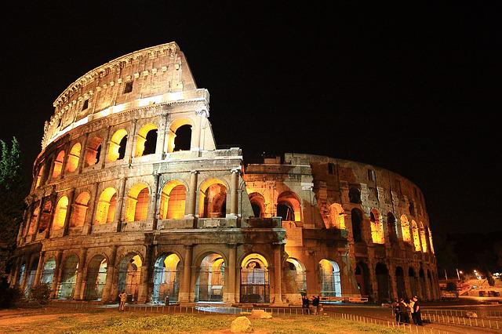
- Roma, Itália
- Roma é a capital da Itália e também da região do Lácio, além de ser o centro da Cidade Metropolitana de Roma. A cidade está localizada na porção centro-oeste da Península Itálica, ao longo das margens do rio Tibre. A Cidade do Vaticano (o menor país do mundo) é um país independente dentro dos limites da cidade de Roma, o único exemplo existente de um país dentro de uma cidade no mundo. Roma é muitas vezes referida como a "Cidade das Sete Colinas" devido à sua localização geográfica, e também como a "Cidade Eterna", por conta de sua longa história. Roma é geralmente considerada o "berço da cultura e da civilização ocidental e cristã" e o centro da Igreja Católica. A história de Roma abrange 28 séculos.
Saiba mais
Destinos mais conhecidos dos EUA
- Washington, DC
- Washington é a capital e o distrito federal dos Estados Unidos. O Distrito de Colúmbia, formado oficialmente em 16 de julho de 1790 é o distrito federal dos Estados Unidos, Washington foi nomeada em homenagem ao primeiro Presidente dos Estados Unidos, George Washington. Washington abriga as sedes dos três braços do governo dos Estados Unidos, o Legislativo, o Executivo e o Judiciário. Além disso, a cidade abriga também as sedes do Fundo Monetário Internacional, do Banco Mundial, da Organização dos Estados Americanos, entre diversas outras instituições nacionais e internacionais.
Saiba mais
- 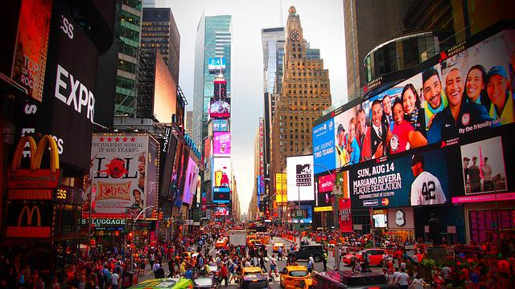
- Nova Iorque, NY
- Nova Iorque é a cidade mais populosa dos Estados Unidos. A cidade exerce um impacto significativo sobre o comércio, finanças, mídia, arte, moda, pesquisa, tecnologia, educação e entretenimento de todo o planeta. Nova Iorque abriga a sede da Organização das Nações Unidas (ONU), sendo um importante centro para assuntos internacionais e amplamente considerada como a capital cultural do mundo. Nova Iorque tem suas raízes na sua fundação em 1624 como um posto de comércio por colonos neerlandeses, sendo nomeada Nova Amsterdã, em 1626.
Saiba mais
- 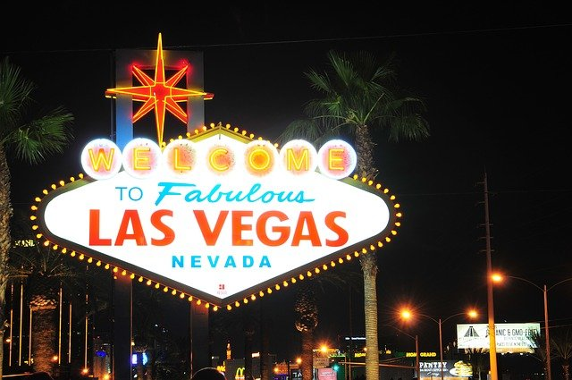
- Las Vegas, NV
- Las Vegas, oficialmente Cidade de Las Vegas. Las Vegas é popularmente famosa devido aos seus hotéis luxuosos e casinos, o que impulsiona o turismo na cidade. A cidade está localizada na área metropolitana Las Vegas Valley, onde se encontra a avenida Las Vegas Boulevard que contém os casinos mais imponentes do mundo. A Las Vegas Boulevard e a região de Old Town Las Vegas, são as duas regiões mais visitadas de Las Vegas Valley e que concentram praticamente todas as principais atrações turísticas. Na área do entretenimento a cidade se destaca por ser palco da residência de shows fixos de grandes ícones da indústria musical.
Saiba mais

- São Francisco, CA
- São Francisco, é uma cidade do estado da Califórnia. São Francisco é o centro financeiro, cultural e de transportes da área da baía de São Francisco. Em 1776, os espanhóis estabeleceram uma fortaleza no Golden Gate e uma missão chamada de Francisco de Assis no local. A Corrida do ouro na Califórnia, em 1848, impulsionou a cidade em um período de rápido crescimento. São Francisco é um centro de ativismo liberal nos Estados Unidos. São Francisco é um popular destino turístico internacional, conhecido pela sua neblina fria do verão, íngremes colinas, eclética mistura de arquitetura vitoriana e moderna e seus marcos históricos famosos, incluindo a Ponte Golden Gate, os bondes e Chinatown. A cidade é também um centro financeiro e bancário, sendo sede de mais de 30 instituições financeiras internacionais.
Saiba mais
Países mais procurados da América do Sul
- 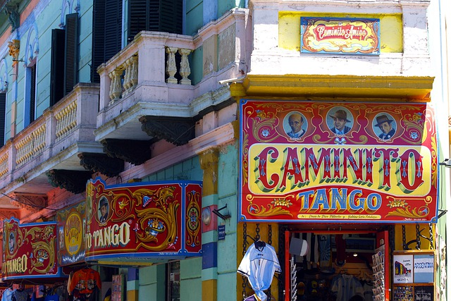
- Argentina
- A Argentina é um país da América do Sul com uma área extensa que abrange montanhas dos Andes, lagos glaciais e pradarias nos Pampas, ocupadas tradicionalmente por seu famoso gado. O país é conhecido também por sua dança e sua música, o tango. A capital cosmopolita, Buenos Aires, tem como centro a Praça de Maio, cercada por edifícios imponentes do século XIX, como a Casa Rosada, o emblemático palácio presidencial.
Saiba mais
- 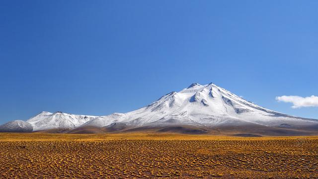
- Chile
- O Chile é um país de território comprido e estreito que se estende pelo extremo oeste da América do Sul, com mais de 6.000 km de litoral ao longo do Oceano Pacífico. Santiago, sua capital, fica localizada em um vale cercado pelos Andes e pelas montanhas da Cordilheira da Costa do Pacífico Sul. Nessa cidade, a Plaza de Armas, repleta de palmeiras, abriga a catedral neoclássica e o Museu de História Nacional. O imenso Parque Metropolitano tem piscinas, um jardim botânico e um zoológico.
Saiba mais

- Colombia
- A Colômbia é um país no extremo norte da América do Sul. Sua paisagem é marcada por florestas tropicais, pela Cordilheira dos Andes e por várias plantações de café. Na capital Bogotá, que se encontra a uma grande altitude, a Zona Rosa é conhecida por seus restaurantes e lojas. Cartagena, na costa caribenha, conta com uma Cidade Antiga colonial murada, um castelo do século XVI e recifes de corais.
Saiba mais
- 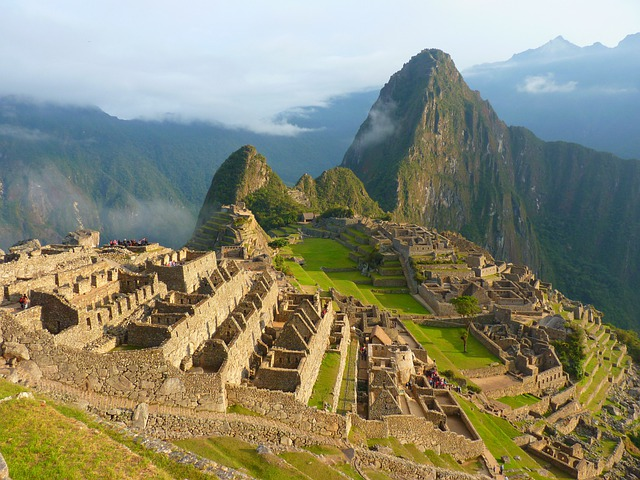
- Peru
- O Peru é um país da América do Sul que abriga uma parte da Floresta Amazônica e Machu Picchu, uma antiga cidade inca na cordilheira dos Andes. A região ao redor de Machu Picchu, que abrange o Vale Sagrado dos Incas, o Camino Inca e a cidade colonial de Cusco, é rica em sítios arqueológicos. Na costa árida do Pacífico fica Lima, a capital, com um centro colonial preservado e coleções importantes de arte pré-colombiana.
Saiba mais
Países mais procurados da América Central e do Norte

- Canadá
- O Canadá é um país norte-americano que se estende desde os EUA, no sul, até o Círculo Polar Ártico, no norte. Entre suas grandes cidades estão a gigantesca Toronto; Vancouver, centro cinematográfico da costa oeste; Montreal e Québec City, que falam francês; e a capital, Ottawa. As vastas regiões de natureza selvagem do Canadá compreendem o Parque Nacional de Banff, repleto de lagos nas Montanhas Rochosas. Abriga também as Cataratas do Niágara, um famoso conjunto de enormes cachoeiras.
Saiba mais
- 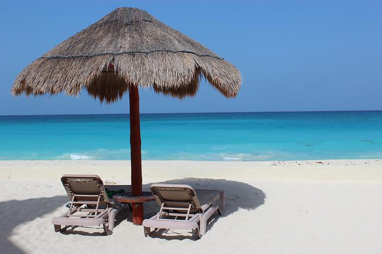
- México
- O México é um país situado entre os Estados Unidos e a América Central, conhecido pelas praias no Pacífico e no Golfo do México e pela paisagem diversificada que inclui montanhas, desertos e selvas. Ruínas antigas, como Teotihuacán e a cidade maia de Chichén Itzá, estão espalhadas pelo país, assim como cidades da era colonial espanhola. Na capital, Cidade do México, lojas elegantes, museus renomados e restaurantes gourmet atendem às necessidades da vida moderna.
Saiba mais
- 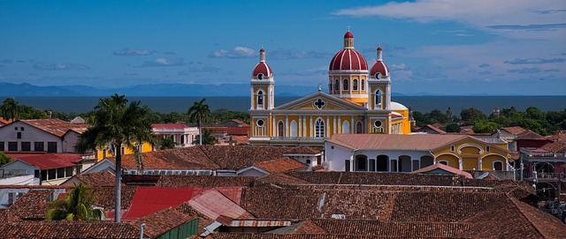
- Nicaragua
- A Nicarágua, situada entre o Oceano Pacífico e o Mar do Caribe, é um país da América Central conhecido pela impressionante paisagem que compreende lagos, vulcões e praias. O vasto lago Manágua e o famoso estratovulcão Momotombo ficam ao norte da capital Manágua. Ao sul está localizada Granada, conhecida pela arquitetura colonial espanhola e por um arquipélago de ilhotas navegáveis e ricas em pássaros tropicais.
Saiba mais
- 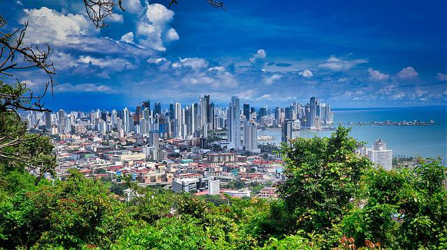
- Panamá
- O Panamá é um país no istmo que liga a América Central à do Sul. O Canal do Panamá, uma reconhecida proeza de engenharia, corta o centro do país, ligando os oceanos Atlântico e Pacífico e criando uma importante rota de navegação. Na capital, a Cidade do Panamá, arranha-céus modernos, cassinos e casas noturnas contrastam com as construções coloniais do distrito de Casco Viejo e com a floresta tropical do Parque Natural Metropolitano.
Saiba mais
Países mais procurados da Ásia
- 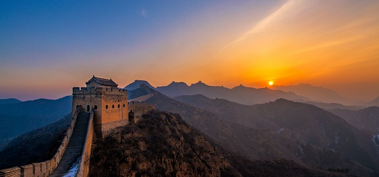
- China
- A China é uma nação muito populosa da Ásia Oriental cuja ampla paisagem abrange pradarias, desertos, montanhas, lagos, rios e mais de 14.000 km de litoral. A capital Pequim combina a arquitetura moderna com locais históricos, como o complexo de palácios da Cidade Proibida e a Praça da Paz Celestial. Xangai é um centro financeiro global repleto de arranha-céus. A emblemática Muralha da China corta a região norte do país de leste a oeste.
Saiba mais
- 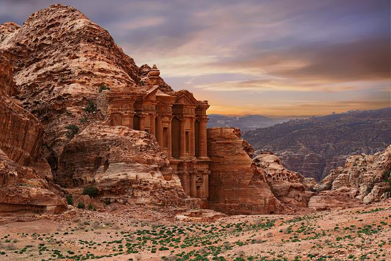
- Jordania
- A Jordânia, uma nação árabe situada na margem leste do rio Jordão, é conhecida pelos monumentos antigos, pelas reservas naturais e pelos resorts à beira-mar. O país abriga o famoso sítio arqueológico de Petra, a capital dos nabateus, que data de aproximadamente 300 a.C. Situada em um estreito vale com tumbas, templos e monumentos esculpidos nos penhascos de arenito cor-de-rosa que a rodeiam, Petra faz jus ao apelido de "Cidade Rosa".
Saiba mais
- 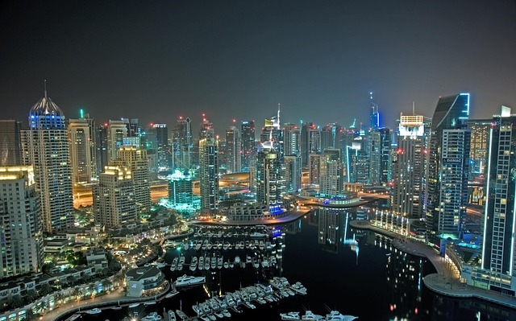
- Emirados Árabes Unidos
- Os Emirados Árabes Unidos são uma nação da península Arábica localizada predominantemente ao longo do Golfo Pérsico. O país é uma federação de 7 emirados. Abu Dhabi, a capital da ilha, abriga a Mesquita Xeique Zayed, com lustres de cristal e espaço para 40.000 fiéis. Dubai conta com a ultramoderna torre Burj Khalifa, enormes shopping centers e extravagantes atrações de entretenimento.
Saiba mais

- Japão
- O Japão, país insular no Oceano Pacífico, tem cidades densas, palácios imperiais, parques nacionais montanhosos e milhares de santuários e templos. Os trens-bala Shinkansen conectam as principais ilhas: Kyushu (com as praias subtropicais de Okinawa), Honshu (onde ficam Tóquio e a sede do memorial da bomba atômica de Hiroshima) e Hokkaido (famosa como destino para a prática de esqui). Tóquio, a capital, é conhecida por seus arranha-céus e lojas e pela cultura pop.
Saiba mais
Países mais procurados da Oceania

- Polinésia Francesa
- A Polinésia Francesa, uma coletividade ultramarina da França, abrange mais de 100 ilhas no Pacífico Sul e se estende por mais de 2.000 km. Dividida entre os arquipélagos Austral, Gambier, Marquesas, Sociedade e Tuamotu, ela é conhecida por suas lagoas rodeadas de corais e hotéis de bangalô sobre a água. As ilhas se caracterizam por praias de areia preta e branca, montanhas, áreas remotas selvagens e cachoeiras imponentes.
Saiba mais
- 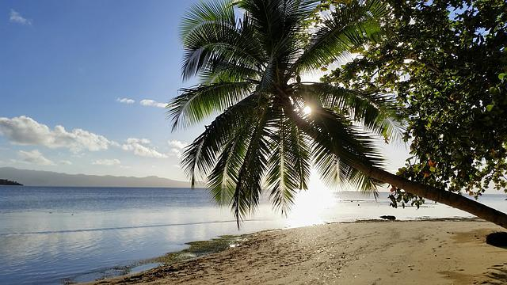
- Ilhas Fiji
- Fiji, país localizado no Pacífico Sul, é um arquipélago com mais de 300 ilhas famoso pelas paisagens acidentadas, pelas praias repletas de palmeiras e pelos recifes de corais com lagoas cristalinas. Suas principais ilhas, Viti Levu e Vanua Levu, abrigam a maior parte da população. Viti Levu é onde fica a capital, Suva, uma cidade portuária com arquitetura colonial britânica. O Fiji Museum, localizado nos Thurston Gardens, da era vitoriana, oferece exposições etnográficas.
Saiba mais
- 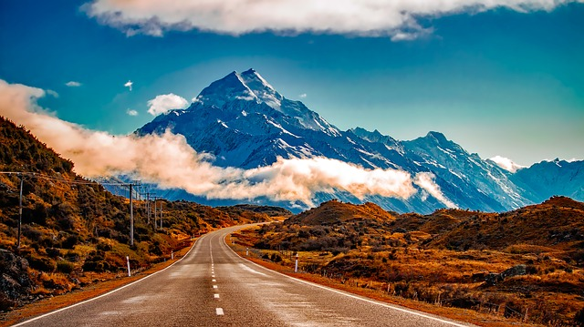
- Nova Zelândia
- Nova Zelândia é um país no sudoeste do Oceano Pacífico formado por 2 ilhas principais, ambas marcadas por vulcões e glaciações. Na capital Wellington, na Ilha Norte, fica o museu nacional Te Papa Tongarewa. O imponente Monte Victoria, em Wellington, o Fiordland, na ilha Sul, e os Lagos do Sul foram cenário da mítica Terra Média nos filmes da série "O Senhor dos Anéis", de Peter Jackson.
Saiba mais

- Austrália
- A Austrália é um país continental cercado pelos oceanos Índico e Pacífico. Suas principais cidades, Sydney, Brisbane, Melbourne, Perth e Adelaide, são costeiras. Sua capital, Camberra, não é litorânea. O país é conhecido pela Sydney Opera House, pela Grande Barreira de Coral, pelo vasto deserto interior chamado Outback e por espécies animais únicas, como cangurus e ornitorrincos.
Saiba mais
Países mais procurados da África
- 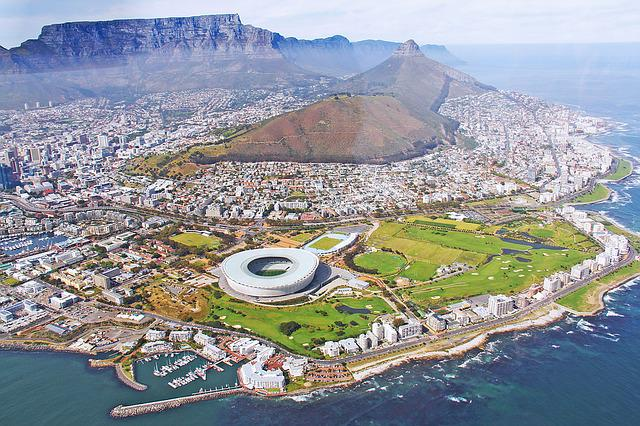
- África do Sul
- A África do Sul é um país situado na extremidade sul do continente africano e marcado por vários ecossistemas diferentes. O Parque Nacional Kruger, um destino para safári no interior do país, é repleto de animais de grande porte. A província de Cabo Ocidental tem praias, vinícolas exuberantes perto de Stellenbosch e Paarl, colinas escarpadas no Cabo da Boa Esperança, florestas e lagoas ao longo da Tuinroete (rota dos jardins) e a Cidade do Cabo, que fica ao pé da montanha da Mesa, de topo achatado.
Saiba mais
- 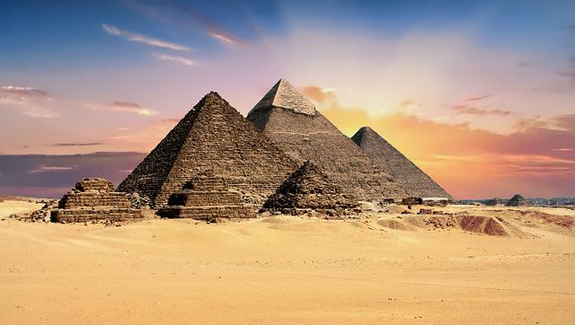
- Egito
- O Egito, um país que liga o nordeste da África ao Oriente Médio, remonta ao tempo dos faraós. Monumentos construídos milênios atrás ficam localizados ao longo do fértil vale do rio Nilo, como as colossais Pirâmides de Gizé e a Esfinge, além do Templo de Karnak (repleto de hieróglifos) e das tumbas do Vale dos Reis, ambos em Luxor. A capital, Cairo, abriga monumentos otomanos como a Mesquita de Muhammad Ali e o Museu Egípcio, com uma coleção de antiguidades.
Saiba mais
- 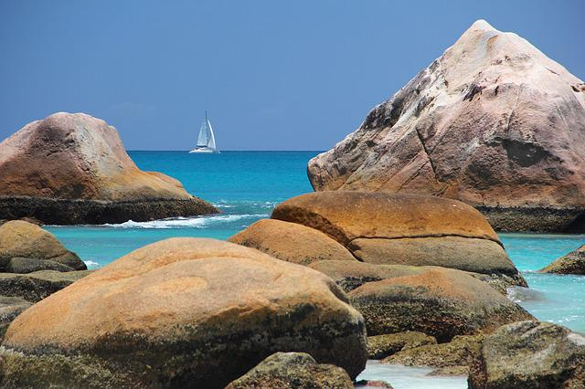
- Ilhas Seychelles
- As Seychelles são um arquipélago de 115 ilhas no Oceano Índico, perto da costa leste da África. Elas têm um grande número de praias, recifes de corais e reservas naturais, além de animais raros como a tartaruga-das-seychelles. Mahé, base para visitação das outras ilhas, abriga a capital Victoria. Destacam-se também as florestas tropicais montanhosas do Parque Nacional Morne Seychellois e praias como Beau Vallon e Anse Takamaka.
Saiba mais
- 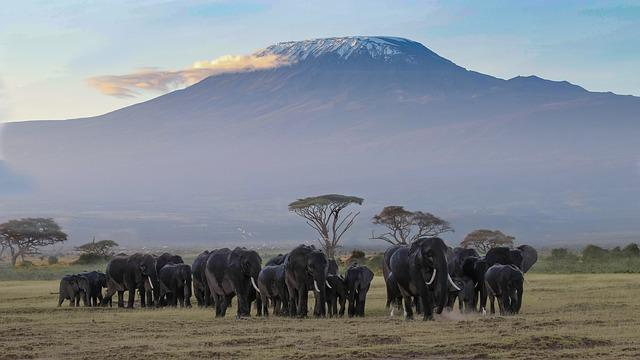
- Tanzânia
- A Tanzânia é um país na África Oriental conhecido por suas vastas áreas selvagens, como as planícies do Parque Nacional de Serengeti, uma das mecas do safári e habitada pelos cinco animais de grande porte mais difíceis de serem caçados (elefante, leão, leopardo, búfalo e rinoceronte). Outro destaque é o Parque Nacional de Kilimanjaro, onde fica a montanha mais alta da África. Em alto-mar, estão as ilhas de Zanzibar, de influência árabe, e de Mafia, com um parque marinho que abriga tubarões-baleia e recifes de corais.
Saiba mais